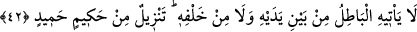

“azîz” kelimesi “izz” kökünden olup “züll” kelimesinin zıddıdır. Kur’ân azîzdir,
yücedir. Zelîl ve hakîr değildir, demek olur. Yahut “azîz” menî’, korunmuş demektir ki
ona muâraza edilemez. İptal ve tahrip yapılamaz. Bu defa “azîz” kelimesi “izzet”
kökünden olup “galebe çalmak” ve “üstün gelmek” demektir. Kur’ân, her ne kadar
birtakım bazı kişilerin fâsid ve haksız yorum ve sataşmalarına muhâtap oluyorsa da her
asırda bâtıl ehli tarafından ortaya atılan şüpheleri iptal ve izâle edecek ve onların fâsid
yorumlarını ortadan kaldıracak hak savunucuları da vardır.
Kur’ân, Allah’ın koruma ve himâyesi ile ayrıca ona sataşanları men’ edecek âlimlerin
çokluğu ile mutlak gâliptir. İmâm Kuşeyrî (k.s.) şöyle demiştir: “ Kur’ân izzetlidir,
çünkü o izzetli bir meleğin, izzetli bir peygambere, izzetli bir ümmet için getirdiği
İzzetli Rabbin kelâmıdır. Ayrıca o, dost katından, dosttan gelen bir mektuptur, dosttan
gelen mektup da dostlar için azîz olur.”
İbn Atâ şöyle demiştir: Kur’ân çok azîz ve yücedir. Çünkü hiç kimse Kur’ân’ın bizzat
sahip olduğu yüceliğin hakkının hakîkatine ulaşamaz. Yine Kur’ân kendisine indirilen
zâtın izzeti ve kendilerine hitâb edilen Allah’ın has kulları ve değerli dostlarının izzeti
sebebiyle pek azîzdir.
42. Ona önünden de ardından da bâtıl gelemez. O, hikmet sahibi, çok övülen
Allah’tan indirilmiştir.
“Ona önünden de ardından da bâtıl gelemez.” Bâtıl hiçbir taraftan yol bulup ona
gelemez ve ulaşamaz. Yani Allah tarafından hak ve sâbit olmayıp Kur’ân’ın iptâline
yönelik iftirâlar Kur’ân’a ulaşamaz.
Burada en bâriz olan iki yön; ön ve arka zikredilip bütün yönler murad edilmiştir.
“Ona önünden de ardından da bâtıl gelemez.” kavli, istiâre-i temsîliyye olup kitap,
hiçbir şekilde bâtılın kendisine müdâhil olamaması bakımından kudret ve kuvvet sahibi
ve hükümran olan birinin himâyesi ile koruma altına alınmış kişiye benzetilmiştir ki o
kimse komşusunu düşmanın her türlü taarruz ve saldırılarından korumaktadır. Sonra bu
teşbih, istiâre makamına çıkarılıp müşebbehün bih/kendisine benzetilen’den
müşebbeh/benzetilen ve “Ne önünden ne de arkasından onu boşa çıkaracak bir söz
gelmez” buyrulmuştur.
Yahut geçmiş ve geleceğe dâir verdiği haberlerde bâtıl ona gelemez, demektir. Yahut
burada bâtıl şeytanlar Kur’ân’a bir ilâve yahut noksanlık yaparak yaklaşamaz, demek
olur. Veya Kur’ân’a kendisinden önceki kitaplardan hiçbir tekzîb ve yalanlama
gelmediği gibi kendisinden sonra da onu iptâl edip hükmünü ortadan kaldıracak bir
kitap da gelmeyecektir, demektir.
“O, hikmet sahibi, çok övülen Allah’tan indirilmiştir.” Burada “tenzil” kelimesi